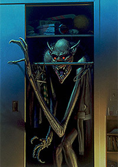
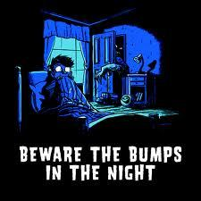
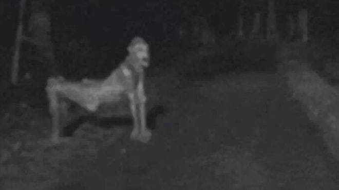
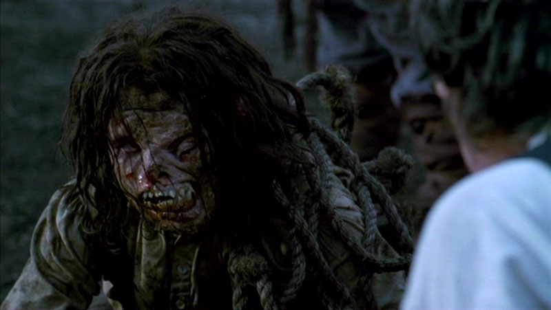

Things that go Bump in the Dark

welcome to our site on all things supernatural. It maybe hiding under your bed or watching you through your mirror. Keep reading to know more about the creatures you need to keep a look-out on.

1. Skinwalkers:


In Navajo culture, a skin-walker (yee naaldlooshii) is a type of harmful witch who has the ability to turn into, possess, or disguise themselves as an animal. The legend of the skin-walkers is not well understood outside of Navajo culture, mostly due to reluctance to discuss the subject with outsiders. Navajo people are reluctant to reveal skin-walker lore to non-Navajos, or to discuss it at all among those they do not trust. They might also possess living animals or people and walk around in their bodies by locking eyes with them.
2. Kuchisake-Onna:

Kuchisake-onna (裂け女, "Slit Mouthed Woman") is a figure appearing in Japanese ghost stories, possibly dating back to the Edo period. According to the legend, she covers her mouth with a cloth mask, a fan, or a scarf.
The woman will ask a potential victim "Am I pretty?" If he or she answers yes, she will remove her mask and ask him or her again in a girly voice. If the potential victim answers yes or screams, she will slash the victim from ear to ear so that the victim resembles her. If he or she answers no, she will walk away, only to follow her victim home and brutally murder him or her that night.
To avoid this fate, several people during the Edo period claimed that they gave her confusing answers like average and so-so or threw money or hard candy at her, buying themselves time to run away and lose her.
3. Lycanthrope:


A werewolf (Old English: werwulf, "man-wolf") or occasionally lycanthrope (Greek:"wolf-person") is a mythological or folkloric human with the ability to shapeshift into a wolf , either purposely or after being placed under a curse or affliction (often a bite or scratch from another werewolf). Most modern fiction describes werewolves as vulnerable to silver weapons and highly resistant to other injuries. Along with the vulnerability to the silver bullet, the full moon being the cause of the transformation only became part of the depiction of werewolves on a widespread basis in the twentieth century.
4. La Llorona:

La Llorona ("The Weeping Woman") is a legendary ghost prominent in folklore of Latin America. This myth has a tendency to take aspects of an urban legend and is present throughout Mexican culture. According to the tradition, La Llorona is the ghost of a woman who lost her children and now cries while looking for them in the river, often causing misfortune to those who are near or hear her. Mexican parents often use this story to prevent their children from wandering out at night. In some versions of this tale, La Llorona will kidnap wandering children who resemble her missing children. She asks them for forgiveness, then drowns the children to take the place of her own. People who claim to have seen her say she appears at night or in the late evening by rivers or lakes. Some believe those who hear the wails of La Llorona are marked for death but those who escape in time are not so marked.
5. Nosferatu


The name "Nosferatu" has been presented as possibly an archaic Hungarian-Romanian word, synonymous with "vampire". More decidedly evil, however, is the vampire, or nosferatu, in which every Roumenian peasant believes as firmly as he does in heaven or hell. There are two sorts of vampires-—living and dead. The living vampire is in general the illegitimate offspring of two illegitimate persons, but even a flawless pedigree will not ensure anyone against the intrusion of a vampire into his family vault, since every person killed by a nosferatu becomes likewise a vampire after death, and will continue to suck the blood of other innocent people till the spirit has been exorcised, either by opening the grave of the person suspected and driving a stake through the corpse, or firing a pistol shot into the coffin. In very obstinate cases it is further recommended to cut off the head and replace it in the coffin with the mouth filled with garlic, or to extract the heart and burn it, strewing the ashes over the grave.
To explore more on dark stuff and to share your experiences:
contact me
Everyday is Halloween, is'nt it? For some of us.
Don't be afraid of the dark....
The moon is full and shining, it's time they go hunting.
"Cuz the best things only happen in the dark."